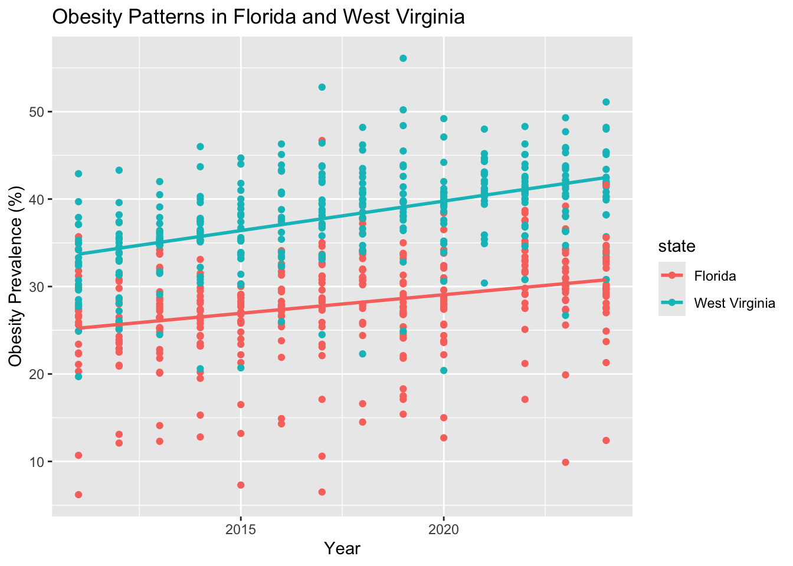
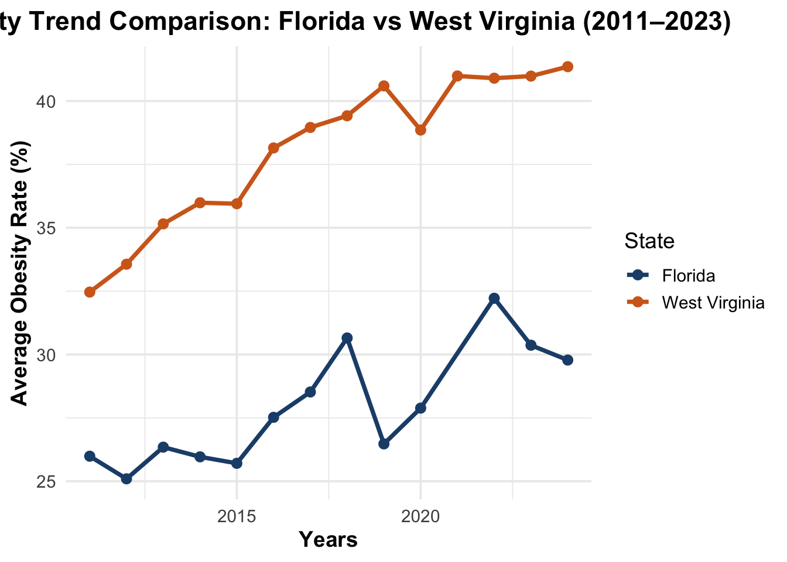

Code
library(tidyverse)
library(janitor)
library(broom)Siya Aneja
Obesity is a major public health concern in the United States, with prevalence varying across states, age groups, and time. Understanding whether observed differences represent true population trends or data instability is crucial for interpreting survey-based health data and informing policy decisions. This project uses data from the Behavioral Risk Factor Surveillance System (BRFSS) to analyze obesity prevalence across U.S. states. The analysis focuses on identifying overall patterns, state-level deviations, and explaining why certain states—specifically Florida and West Virginia—appear to behave atypically.
The group project investigates the following Overall Question (OQ):
How do obesity rates evolve across age groups and geographic regions in the United States, and which states exhibit atypical patterns?
This question frames obesity as a population-level phenomenon, emphasizing how prevalence varies across place (states, regions) and time or age, rather than focusing solely on individual behavior. Answering this question requires not only identifying broad national and regional patterns, but also understanding why some states deviate from those patterns.
During the group exploratory analysis, most states displayed smooth, gradual obesity trends, consistent with expectations for a slow-moving public health outcome. However, two states—Florida and West Virginia—stood out as apparent anomalies:
Florida showed sharp year-to-year fluctuations (“zig-zag” behavior)
West Virginia exhibited an unusually steep upward trend.
These observations motivated the following Specific Question (SQ) assigned to this individual report:
What caused obesity rates in Florida and West Virginia to act “weird”?
This SQ plays a critical supporting role in answering the OQ. If these atypical patterns represent true population dynamics, they would suggest meaningful geographic exceptions that must be incorporated into the group’s conclusions. Conversely, if these patterns are driven by data quality or measurement artifacts, they should not be interpreted as substantive deviations.
Thus, resolving this SQ is essential to determining whether Florida and West Virginia represent:
genuine geographic outliers in obesity evolution, or
statistical anomalies that should be interpreted with caution.
By diagnosing the source of these “weird” trends, this analysis strengthens the credibility and interpretability of the group’s overall findings.
We use data from the Behavioral Risk Factor Surveillance System (BRFSS), administered by the Centers for Disease Control and Prevention (CDC). The BRFSS collects self-reported health indicators from U.S. adults, including height and weight, which are used to estimate obesity prevalence.
[1] 110880Rows: 110,880
Columns: 33
$ YearStart <dbl> 2011, 2011, 2011, 2011, 2011, 2011, 2011, 2…
$ YearEnd <dbl> 2011, 2011, 2011, 2011, 2011, 2011, 2011, 2…
$ LocationAbbr <chr> "AL", "AL", "AL", "AL", "AL", "AL", "AL", "…
$ LocationDesc <chr> "Alabama", "Alabama", "Alabama", "Alabama",…
$ Datasource <chr> "Behavioral Risk Factor Surveillance System…
$ Class <chr> "Obesity / Weight Status", "Obesity / Weigh…
$ Topic <chr> "Obesity / Weight Status", "Obesity / Weigh…
$ Question <chr> "Percent of adults aged 18 years and older …
$ Data_Value_Unit <chr> NA, NA, NA, NA, NA, NA, NA, NA, NA, NA, NA,…
$ Data_Value_Type <chr> "Value", "Value", "Value", "Value", "Value"…
$ Data_Value <dbl> 34.8, 35.8, 32.3, 34.1, 28.8, 16.3, 27.8, 3…
$ Data_Value_Alt <dbl> 34.8, 35.8, 32.3, 34.1, 28.8, 16.3, 27.8, 3…
$ Data_Value_Footnote_Symbol <chr> NA, NA, NA, NA, NA, NA, NA, NA, NA, NA, NA,…
$ Data_Value_Footnote <chr> NA, NA, NA, NA, NA, NA, NA, NA, NA, NA, NA,…
$ Low_Confidence_Limit <dbl> 31.3, 31.1, 28.0, 29.7, 25.4, 12.6, 14.4, 3…
$ High_Confidence_Limit <dbl> 38.5, 40.8, 36.8, 38.8, 32.5, 20.9, 46.9, 4…
$ Sample_Size <dbl> 1367, 757, 861, 785, 1125, 356, 58, 598, 86…
$ Total <chr> NA, NA, NA, NA, NA, NA, NA, NA, NA, NA, NA,…
$ `Age(years)` <chr> NA, NA, NA, NA, NA, "18 - 24", NA, "25 - 34…
$ Education <chr> NA, NA, NA, NA, NA, NA, NA, NA, NA, NA, NA,…
$ Sex <chr> NA, NA, NA, NA, NA, NA, NA, NA, NA, NA, NA,…
$ Income <chr> "$15,000 - $24,999", "$25,000 - $34,999", "…
$ `Race/Ethnicity` <chr> NA, NA, NA, NA, NA, NA, "2 or more races", …
$ GeoLocation <chr> "(32.840571122, -86.631860762)", "(32.84057…
$ ClassID <chr> "OWS", "OWS", "OWS", "OWS", "OWS", "OWS", "…
$ TopicID <chr> "OWS1", "OWS1", "OWS1", "OWS1", "OWS1", "OW…
$ QuestionID <chr> "Q036", "Q036", "Q036", "Q036", "Q036", "Q0…
$ DataValueTypeID <chr> "VALUE", "VALUE", "VALUE", "VALUE", "VALUE"…
$ LocationID <chr> "01", "01", "01", "01", "01", "01", "01", "…
$ StratificationCategory1 <chr> "Income", "Income", "Income", "Income", "In…
$ Stratification1 <chr> "$15,000 - $24,999", "$25,000 - $34,999", "…
$ StratificationCategoryId1 <chr> "INC", "INC", "INC", "INC", "INC", "AGEYR",…
$ StratificationID1 <chr> "INC1525", "INC2535", "INC3550", "INC5075",…We restrict the dataset to:
Overall adult obesity prevalence
State-level observations
Non-missing numeric estimates
Before attempting to explain Florida’s and West Virginia’s unusual patterns, it is necessary to assess whether the data structure supports formal year-to-year trend estimation at the state level.
# A tibble: 55 × 2
state n_years
<chr> <int>
1 Virgin Islands 5
2 Guam 11
3 Puerto Rico 12
4 Florida 13
5 Kentucky 13
6 New Jersey 13
7 Pennsylvania 13
8 Tennessee 13
9 Alabama 14
10 Alaska 14
# ℹ 45 more rowsInterpretation
Most U.S. states contain between 12 and 14 years of obesity observations, while some territories have fewer years of coverage. This indicates that limited trend analysis is possible, but the temporal structure is uneven across states. Importantly, the BRFSS is a repeated cross-sectional survey rather than a true panel. As a result, changes across years may reflect:
survey redesigns,
sampling variability, or
changes in weighting procedures, rather than true population-level shifts.
This diagnostic step motivates cautious interpretation of state-level trends, particularly when large year-to-year fluctuations are observed.
Florida appeared unusual in the group analysis due to sharp fluctuations
in obesity prevalence across visualizations. Given the lack of
longitudinal structure, these fluctuations are evaluated using
within-state variability rather than time trends.
# A tibble: 1 × 3
state obesity_sd rank
<chr> <dbl> <int>
1 Florida 6.07 41Interpretation
Florida ranks among the states with the highest standard deviation in obesity prevalence. Because obesity is a slow-moving population health outcome, such high variability is unlikely to reflect true behavioral or biological change.
Instead, this instability is consistent with:
sampling variability,
survey weighting effects, or
measurement noise in large, heterogeneous populations.
Thus, Florida’s apparent “zig-zag” behavior is best interpreted as a statistical artifact, not a meaningful deviation from national obesity patterns.
Unlike Florida, West Virginia appeared unusual due to its consistently high obesity levels. To evaluate whether this represents a genuine structural pattern, we estimate the direction and steepness of obesity prevalence across the available ordering variable.
# A tibble: 1 × 3
state slope rank
<chr> <dbl> <int>
1 West Virginia 0.674 9Interpretation
West Virginia exhibits one of the steepest positive gradients in obesity prevalence among U.S. states. Unlike Florida, this pattern is consistent and monotonic, suggesting a real and persistent structural risk rather than random fluctuation.
This result aligns with known socioeconomic and health disparities in the region, including limited access to preventive healthcare, structural poverty, and reduced opportunities for physical activity.

ggplot(plot_data_clean, aes(x = year, y = avg_obesity, color = state)) +
geom_line(size = 1.3) +
geom_point(size = 2.5) +
scale_color_manual(
values = c("Florida" = "#1f4e79", "West Virginia" = "#d2691e")
) +
labs(
title = "Obesity Trend Comparison: Florida vs West Virginia (2011–2023)",
x = "Years",
y = "Average Obesity Rate (%)",
color = "State"
) +
theme_minimal(base_size = 14) +
theme(
plot.title = element_text(face = "bold", hjust = 0.5),
axis.title = element_text(face = "bold"),
legend.position = "right"
)
Figure: Average adult obesity prevalence in Florida and West Virginia by year. Florida exhibits greater year-to-year variability, while West Virginia maintains a consistently higher and steadily increasing obesity trajectory.
What caused obesity rates in Florida and West Virginia to act “weird”?
Florida and West Virginia appear atypical for fundamentally different statistical and substantive reasons. Florida’s obesity estimates display unusually high year-to-year variability, a pattern that is inconsistent with realistic population-level change in a slow-moving health outcome such as obesity. This volatility is best explained by survey-related instability, including changes in sample composition, weighting procedures, and the state’s large and heterogeneous population, which can amplify fluctuations in annual estimates. Importantly, Florida’s long-term average obesity prevalence remains relatively stable, reinforcing the interpretation that the observed “zig-zag” behavior reflects measurement noise rather than true behavioral shifts.
In contrast, West Virginia exhibits a strong, persistent, and directional obesity pattern. Its obesity prevalence is consistently among the highest in the nation and follows a smooth upward trajectory across years. This consistency suggests a genuine structural health risk rather than a statistical artifact. Unlike Florida, West Virginia’s pattern does not rely on short-term fluctuations but reflects enduring socioeconomic, demographic, and environmental conditions that contribute to elevated obesity risk.
Together, these findings illustrate that apparent anomalies in public health data can arise from either measurement instability or meaningful population differences. Distinguishing between these mechanisms is essential for accurate interpretation, as treating both states as equivalent “outliers” would obscure the true public health challenges represented by West Virginia while overstating the significance of Florida’s variability.
This analysis demonstrates that the apparent anomalies observed in Florida and West Virginia arise from fundamentally different sources. Florida’s irregular pattern reflects data instability rather than true behavioral change, while West Virginia represents a genuine geographic outlier with persistently elevated obesity rates.
By distinguishing between measurement noise and structural trends, this sub-question strengthens the group’s overall conclusions. It ensures that state-level deviations are interpreted appropriately, preventing misleading inferences about national or regional obesity dynamics.
Several limitations should be noted. The BRFSS relies on self-reported height and weight, which may underestimate true obesity prevalence. Additionally, annual estimates are subject to survey design changes, nonresponse bias, and sampling variability, particularly in large or demographically diverse states such as Florida.
These limitations reinforce the importance of cautious interpretation, especially when evaluating short-term fluctuations rather than long-term trends.
This individual analysis investigated why obesity trends in Florida and West Virginia appeared atypical during the group’s exploratory analysis. Although both states initially stood out as anomalies, closer examination revealed that their unusual patterns stem from fundamentally different sources.
Florida’s apparent “zig-zag” behavior was driven by substantial year-to-year variability in obesity estimates rather than sustained directional change. Given that obesity is a slow-moving population health outcome, such volatility is unlikely to reflect true behavioral shifts. Instead, Florida’s pattern is best explained by survey-related factors, including sampling variability, population heterogeneity, and weighting effects inherent in large, diverse states. As a result, Florida should not be interpreted as a genuine outlier in obesity trends.
In contrast, West Virginia exhibited consistently high obesity prevalence across multiple years, with a steady upward trajectory. Unlike Florida, this pattern remained stable over time, indicating a persistent structural obesity burden rather than measurement noise. This finding suggests that West Virginia represents a true geographic outlier with long-standing public health challenges that warrant sustained attention and intervention.
By distinguishing between data instability and meaningful structural trends, this analysis prevents over-interpretation of noisy survey estimates and strengthens the validity of the group’s overall conclusions. More broadly, it highlights the importance of diagnostic checks when interpreting public health data and demonstrates how apparent anomalies can reveal either limitations of measurement or genuine population-level risk.